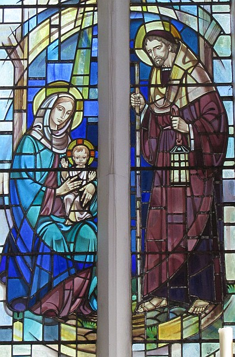

Né v'chîn l'histouaithe d'la fanmil'ye dé Jésû-Christ, fis d'Dâvi, fis d'Abréhan:
Lé fis d'Abréhan 'tait Isaac; et l'fis d'Isaac 'tait Jâcob; et les fis d'Jâcob 'taient Juda et ses fréthes;
et les fis d'Juda et d'Thamar 'taient Pharès et Zara; et l'fis d'Pharès 'tait Esrom; et l'fis d'Esrom 'tait Aram;
et l'fis d'Aram 'tait Aminadab; et l'fis d'Aminadab 'tait Naasson; et l'fis d'Naasson 'tait Salmon;
et l'fis d'Salmon et d'Rahab 'tait Boaz; et l'fis d'Boaz et d'Ruth 'tait Obed; et l'fis d'Obed 'tait Isaï;
et l'fis d'Isaï 'tait Dâvi, et l'fis du Rouai Dâvi et d'la bouonnefemme d'Urie 'tait Solomon;
et l'fis d'Solomon 'tait Roboam; et l'fis d'Roboam 'tait Abia; et l'fis d'Abia 'tait Asa;
et l'fis d'Asa 'tait Josaphat; et l'fis d'Josaphat 'tait Joram; et l'fis d'Joram 'tait Ozias;
et l'fis d'Ozias 'tait Joatham; et l'fis d'Joatham 'tait Achaz; et l'fis d'Achaz 'tait Ezéchias;
et l'fis d'Ezéchias 'tait Manassé; et l'fis d'Manassé 'tait Amon; et l'fis d'Amon 'tait Josias;
et les fis d'Josias 'taient Jéchonias et ses fréthes, au temps d'l'dêportâtion à Babylone.
Auprès la dêportâtion à Babylone, lé fis d'Jéchonias 'tait Salathiel; et l'fis d'Salathiel 'tait Zorobabel;
et l'fis d'Zorobabel 'tait Abiud; et l'fis d'Abiud 'tait Eliakim; et l'fis d'Eliakim 'tait Azor;
et l'fis d'Azor 'tait Sadok; et l'fis d'Sadok 'tait Achim; et l'fis d'Achim 'tait Eliud;
et l'fis d'Eliud 'tait Eléazar; et l'fis d'Eléazar 'tait Matthan; et l'fis d'Matthan 'tait Jâcob;
et l'fis d'Jâcob 'tait Joseph, lé bouonhoumme dé Mathie tchi donnit naîssance à Jésû, tch'est app'lé Christ.
Y'a don quatorze généthâtions d'pis Abréhan jusqu'à Dâvi, quatorze généthâtions d'pis Dâvi jusqu'à la dêportâtion à Babylone, et quatorze générations d'pis la dêportâtion à Babylone jusqu'au Christ.
 La liste du lîngnage dé Jésû l'Onguenné, fis Dâvi fis Âbréhan: Âbréhan engendrit Isâ; Isâ engendrit Jâcob; Jâcob engendrit Judah et ses fréthes; Judah engendrit, dé Thamar, Pharès et Zéra; Pharès engendrit Esron; Esron engendrit Aram; Aram engendrit Aminadab; Aminadab engendrit Nâsson; Nâsson engendrit Salmon; Salmon engendrit Boöz, dé Rahab; Boöz engendrit Obed, dé Ruth; Obed engendrit Jessé; Jessé engendrit Dâvi tchi fut rouai; l'Rouai Dâvi engendrit Salomon, d'la cheinne tch'avait 'té femme d'Uthie; Salomon engendrit Roboam; Roboam engendrit Abiah; Abiah engendrit Asa; Asa engendrit Josaphat; Josaphat engendrit Joram; Joram engendrit Oziah; Oziah engendrit Joathan; Joathan engendrit Achaz; Achaz engendrit Ezéchiah; Ezéchiah engendrit Manassé; Manassé engendrit Amon; Amon engendrit Jôsiah; Jôsiah engendrit Jéchoniah et ses fréthes, d'vièrs l'temps d'la dêportâtion à Babylonne. Épis auprès la dêportâtion à Babylonne: Jéchoniah engendrit Shéaltiel; Shéaltiel engendrit Zérubbabel; Zérubbabel engendrit Abiud; Abiud engendrit Éliachim; Éliachim engendrit Azor; Azor engendrit Zadok; Zadok engendrit Achim; Achim engendrit Éliud; Éliud engendrit Éliâzar; Éliâzar engendrit Mathan; Mathan engendrit Jâcob; Jâcob engendrit Joseph, l'houmme dé Mathie, la cheinne dé tchi fut né Jésû qu'nou-s'appelle l'Onguenné. Y'a don à fîn d'compte quatorze généthâtions d'Âbréhan à Dâvi, épis quatorze généthâtions d'Dâvi à la dêportâtion à Babylonne, épis quatorze généthâtions d'la dêportâtion à Babylonne à l'Onguenné.
La liste du lîngnage dé Jésû l'Onguenné, fis Dâvi fis Âbréhan: Âbréhan engendrit Isâ; Isâ engendrit Jâcob; Jâcob engendrit Judah et ses fréthes; Judah engendrit, dé Thamar, Pharès et Zéra; Pharès engendrit Esron; Esron engendrit Aram; Aram engendrit Aminadab; Aminadab engendrit Nâsson; Nâsson engendrit Salmon; Salmon engendrit Boöz, dé Rahab; Boöz engendrit Obed, dé Ruth; Obed engendrit Jessé; Jessé engendrit Dâvi tchi fut rouai; l'Rouai Dâvi engendrit Salomon, d'la cheinne tch'avait 'té femme d'Uthie; Salomon engendrit Roboam; Roboam engendrit Abiah; Abiah engendrit Asa; Asa engendrit Josaphat; Josaphat engendrit Joram; Joram engendrit Oziah; Oziah engendrit Joathan; Joathan engendrit Achaz; Achaz engendrit Ezéchiah; Ezéchiah engendrit Manassé; Manassé engendrit Amon; Amon engendrit Jôsiah; Jôsiah engendrit Jéchoniah et ses fréthes, d'vièrs l'temps d'la dêportâtion à Babylonne. Épis auprès la dêportâtion à Babylonne: Jéchoniah engendrit Shéaltiel; Shéaltiel engendrit Zérubbabel; Zérubbabel engendrit Abiud; Abiud engendrit Éliachim; Éliachim engendrit Azor; Azor engendrit Zadok; Zadok engendrit Achim; Achim engendrit Éliud; Éliud engendrit Éliâzar; Éliâzar engendrit Mathan; Mathan engendrit Jâcob; Jâcob engendrit Joseph, l'houmme dé Mathie, la cheinne dé tchi fut né Jésû qu'nou-s'appelle l'Onguenné. Y'a don à fîn d'compte quatorze généthâtions d'Âbréhan à Dâvi, épis quatorze généthâtions d'Dâvi à la dêportâtion à Babylonne, épis quatorze généthâtions d'la dêportâtion à Babylonne à l'Onguenné.
Viyiz étout:
{kind=link}